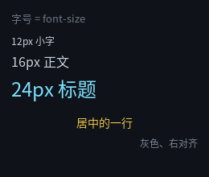
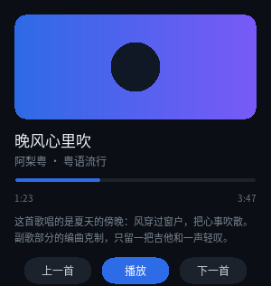

文本
界面里最多的东西大概就是文字。这一章讲清 QLGL 文本的四条规则， 以及为什么它和浏览器不太一样。

完整程序：example/02_text/main.c
<!-- example/02_text/index.html -->
<div id="root">
<div class="h1">字号 = font-size</div>
<div class="s12">12px 小字</div>
<div class="s16">16px 正文</div>
<div class="s24">24px 标题</div>
<div class="c">居中的一行</div>
<div class="dim">灰色、右对齐</div>
</div>
/* example/02_text/style.css（节选） */
.h1 { margin: 12px 0 8px 14px; font-size: 13px; color: #6E7781; }
.s12 { margin: 2px 14px; font-size: 12px; color: #1F2328; }
.s16 { margin: 2px 14px; font-size: 16px; color: #1F2328; }
.s24 { margin: 2px 14px; font-size: 24px; color: #0969DA; }
.c { margin: 12px 14px 4px 14px; font-size: 14px; color: #E6C34A;
text-align: center; }
.dim { margin: 2px 14px; font-size: 12px; color: #57606A;
text-align: right; }
规则一：一个元素 = 一整段文本
<div> 里的文字是这个元素的文本，不是子节点。所以：
<div class="a">短文本</div> <!-- ✅ 一个元素一段文本 -->
<p>Hello <b>world</b>!</p> <!-- ✅ 编译期拆成三个元素 -->
第二种写法看着像"混合内容"，其实在编译期就被拆开了：
<p><span>Hello </span><b>world</b><span>!</span></p>
文本段变成匿名的 <span>。这样做的好处是运行期数据模型里根本没有"文本节点"
这个东西 —— 元素树就是全部。代价是运行期不能往"文本中"插入元素（只能改整段文本）。
规则二：字号来自 font-size，颜色来自 color
两者都会被继承：
.card { font-size: 14px; color: #C8D2DE; }
.card .title { font-size: 18px; } /* 颜色自动继承 14px 那层的 */
doc->font_sizes[] 是去重后的字号表，每个节点的 font_id 是它的下标。
一个页面用几种字号就只建几套字形缓存，不会每个节点一份。
调一下程序就能看到：
字号表： 16px 13px 12px 24px 14px
（16px 排第一，因为 @root 没写 font-size，用了默认值。）
注意：
font-size是设备无关的 CSS 像素。高 DPI 下由绘制后端乘缩放 —— 布局代码永远不需要关心 DPR。
规则三：text-align 控制水平对齐
只有三个值：left / center / right。对齐是在元素的内容盒里做的
（content_box = 边框盒减掉 padding 与 border）。
对齐的对象不只是"这个元素自己的文字"，还包括行内子节点
（display: inline / inline-block）—— 也就是说：
<div class="tile"><span class="label">cover</span></div>
.tile { text-align: center; } /* 标签在格子里居中；写 right 就贴右 */
行内子节点一行放不下会换行，换行之后每一行各自按剩余空间对齐， 不是把整个块当成一坨居中。
规则三·补：line-height 控制竖直位置（按钮里"字对不齐"的答案）
这是新手最常见的一个坑：写了个按钮，加了 text-align: center，字还是贴在顶上。
.btn { width: 56px; height: 26px; text-align: center; } /* ❌ 字贴顶 */
.btn { width: 56px; height: 26px; text-align: center;
line-height: 26px; } /* ✅ 正中 */
这不是 bug，浏览器里也一样：块布局里文字从内容盒顶部开始排，
第一行占一个行盒（行盒高 = line-height）。想让单行字垂直居中，
就把 line-height 设成和 height 一样 —— 多出来的空间上下各分一半。
line-height 接受三种写法：
| 写法 | 含义 |
|---|---|
normal |
用字体自己的行高（ascent + descent），也就是不给值的行为 |
24px |
固定像素值。垂直居中就靠它：和 height 相等 |
1.5 |
无单位 = 当前 font-size 的倍数（1.5 × 16px = 24px） |
它和 font-size / color / text-align 一样会被继承：
在容器上写一次，里面的文字都吃这个行高。
.card { font-size: 13px; line-height: 20px; } /* 卡片里所有文字统一行高 */
一件事要清楚：
line-height只影响文字在行盒里的竖直位置和行间距， 不改变行盒的数量。所以多行文本用它调行距，单行文本用它做垂直居中。 想要"文字在任意高度的盒子里居中而不用算像素"，当前没有flex那套 匿名文本盒，还是得让line-height等于盒高。
规则三·再补：加粗、斜体、下划线
三个 CSS 属性，都是合成实现（不换字体文件）：
.b { font-weight: bold; } /* 也吃数字：>= 600 算加粗 */
.i { font-style: italic; } /* oblique 等价 */
.u { text-decoration: underline; }
.d { text-decoration: line-through; }
.both { text-decoration: underline line-through; } /* 可以组合 */
效果与代价：
| 效果 | 做法 | 需要注意 |
|---|---|---|
| 加粗 | 字形画两遍，第二遍右移 1px | 不是真字重，笔画会略"胖" |
| 斜体 | 逐行右移，顶部挪 高度 × 0.21 |
小字号下只能挪整像素，看起来偏硬 |
| 下划线 / 删除线 | 1px 横线 | 颜色跟 color 走 |
它们和 font-size / color 一样会被继承，所以写在容器上就管整片文字。
对应的语义标签（b strong i em u s）的 UA 默认样式就是这些值，
见标签与语义。
规则四：默认不折行，white-space: normal 才折
这是本库与浏览器唯一有意为之的差异：浏览器默认就折行（white-space: normal），
本库默认 nowrap —— 一段文本就是一行，超长就溢出（被父级 overflow: hidden 裁掉）。
.card { width: 268px; white-space: nowrap; } /* 默认：一行，超长溢出 */
.card { width: 268px; white-space: normal; } /* 按宽度折行 */
为什么默认反过来：v0 的文本模型就是"一段文本一行"，大量已有界面（包括一整套 逐像素基准图）都建立在这个前提上。改成浏览器默认会让那些页面在你没改任何东西的 情况下重新排版。所以折行要显式打开：一行 CSS 换一个明确的语义。
打开之后长度就自动长了 —— 节点高度 = 行数 × line-height，布局与绘制用的是
同一份断行结果（ql_text_wrap()），所以不会出现"布局按一行算、画了三行"。
断行规则（ql_text_wrap()，PC/MCU 同一份）：
| 情况 | 行为 |
|---|---|
| 空格 | 在空格之后断，行首行尾的连续空白丢弃 |
| 中文 | 汉字之间随处可断（和浏览器一致） |
| 超长单词 | 一行放不下一个词时硬断，不做连字符 |
\n |
永远强制断行，与折行叠加 |
/* 一个真实的例子：播放器里的简介 */
.desc { width: 268px; font-size: 11px; line-height: 18px;
color: #7A8794; white-space: normal; }

line-height 在这里同时干两件事：单行居中（上一节）和多行行距（这一节）。
white-space 也会被继承，所以可以在容器上写一次。
pre/pre-wrap/pre-line都支持（break-spaces没有，报错）。text-overflow: ellipsis也支持 —— 而且不要求overflow: hidden， 它只是"少画几个字、末尾换省略号"。制表符宽度用tab-size调。
运行期改文本
ql_ui_set_text(ui, node, "新的内容");
这一条是运行期唯一允许改的东西（结构在编译期固定）。它会顺带把节点标脏，
主循环用 ql_ui_consume_dirty() 拿到区域后局部重绘。
下一章的例子里会用到它。